Binnen en buiten, bij u op de oprit.
Het volledige pakket. Van de velgen tot het dashboard, alles wordt aangepakt. Reken op twee tot drie uur.

Grondige buitenwas met beschermlaag.
Geen borstels die krassen trekken. Eerst het vuil losweken, dan pas aanraken, met twee emmers zodat het vuil niet terug op de lak komt.
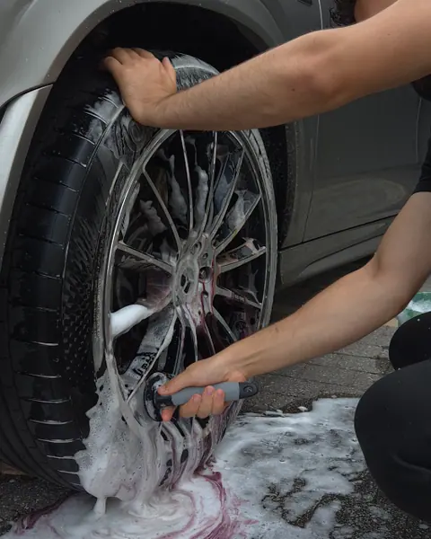
01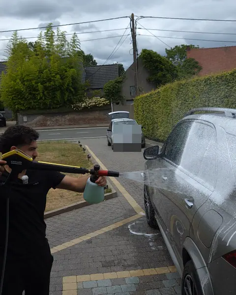
02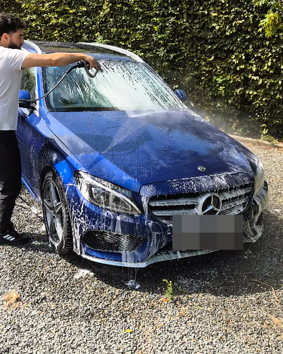
03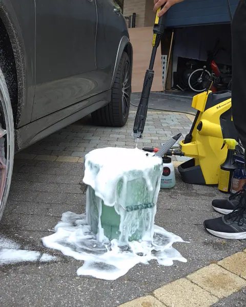
04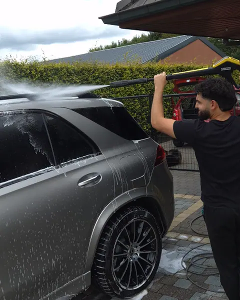
05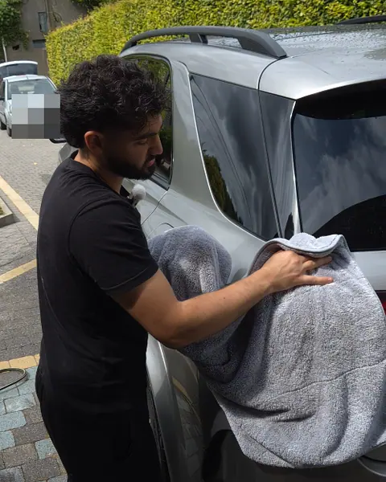
06 07
07Van velgen tot beschermlaag. Uw lak blijft daarna langer proper.
Uw auto van binnen weer als nieuw.
Ook onder de tapijten en in de koffer. Plastieken en het stuur worden gereinigd en gedesinfecteerd, schermen zonder vingerafdrukken.
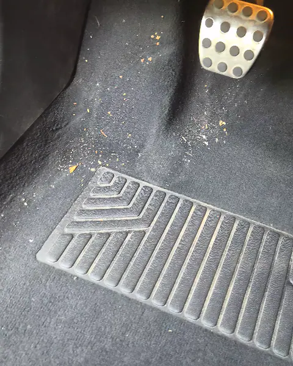
01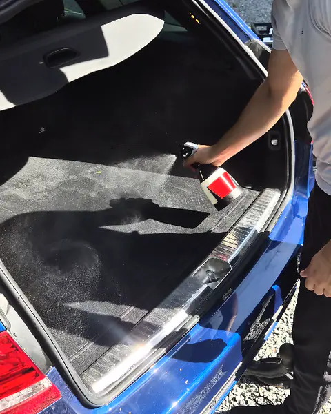
02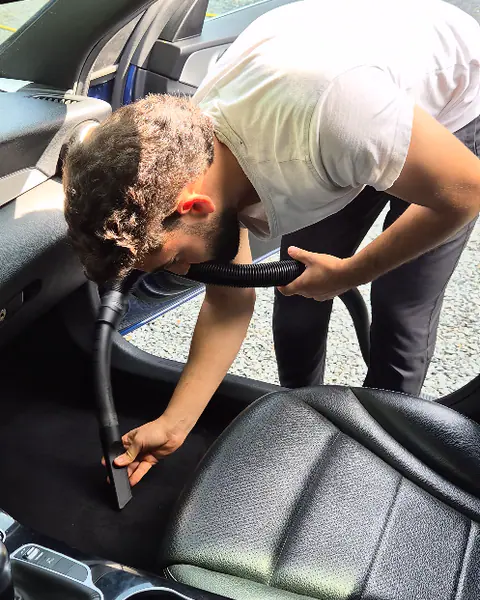
03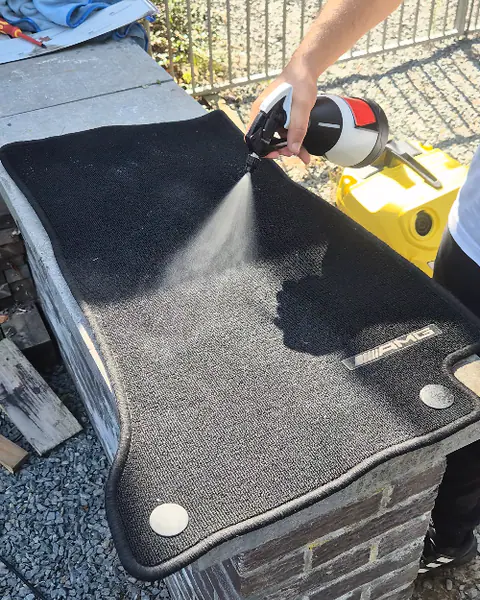
04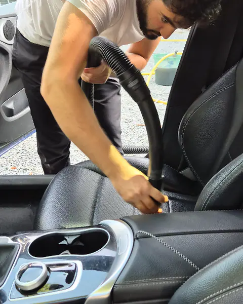
05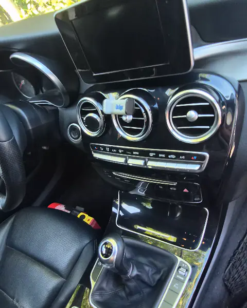
06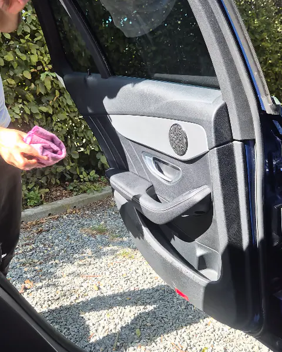
07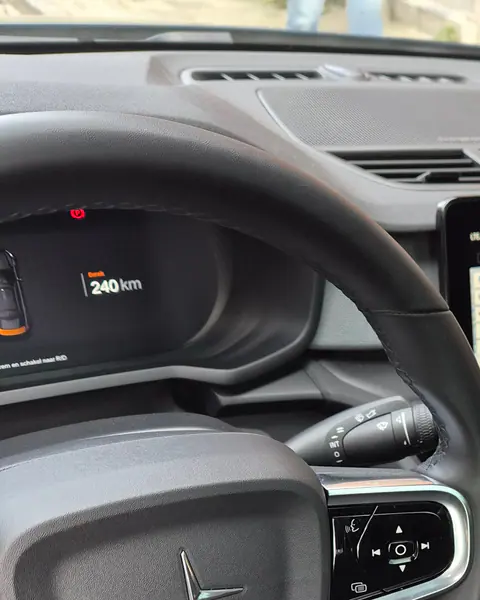
08Detailing vanaf € 159.
Dat is voor het volledige pakket, binnen en buiten. De uiteindelijke prijs hangt af van de grootte en de staat van uw wagen. Een kleine stadswagen vraagt minder werk dan een grote SUV of bestelwagen.
- Volledige buitenwas in zeven stappen
- Volledig interieur in acht stappen
- Beschermlaag op de lak
- Bij u thuis of op het werk
Binnen en buiten
Het volledige pakket, bij u thuis.
Reken op twee tot drie uur.
Vraag uw prijsVlekken in zetels of tapijten
Dieptereiniging van de vlekken.
Hondenharen
Haren uit stof en tapijt, ook de koffer.

 VoorNa
VoorNa
Dodge Ram, buitenwas. Schuif om te vergelijken.
Stof en droogvlekken eraf, glans terug.
Deze pick-up stond stoffig en vol watervlekken op de oprit. Na de buitenwas spiegelen de bomen weer in de lak.
Wil u nog meer glans? PolijstenZin in een propere wagen?
Stuur uw auto en uw gemeente door. Zeg er meteen bij of er vlekken of hondenharen zijn, dan klopt de prijs meteen.